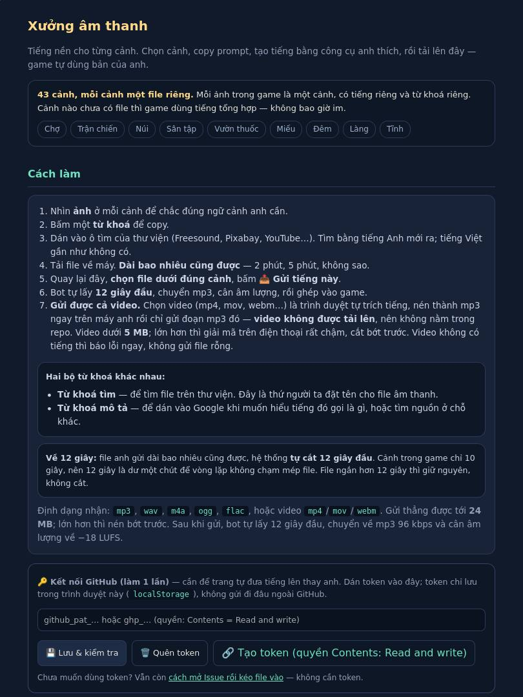

Xưởng âm thanh · đã chạy thật trên trang live · đo bằng Safari (WebKit) trên iPad
Anh muốn dán video vào ô chọn file mà không phải tách tiếng trước. Giờ làm được: chọn video là xong, video không được tải lên — chỉ đoạn tiếng đi vào repo.
Mở Xưởng âm thanhĐẩy video vào repo thì nó nằm vĩnh viễn trong lịch sử git. Bot xoá file ở lần chạy sau cũng không gỡ được — commit cũ vẫn còn đó, và mỗi lần clone là mỗi lần tải lại. Một video 10 MB là 10 MB mãi mãi.
Nên cách làm là: trình duyệt trên máy anh tự đọc luồng tiếng trong video, lấy 12 giây đầu, nén thành mp3, rồi mới gửi. Máy chủ chỉ nhận đoạn mp3 vài chục KB.
.mp4 hay .mov
đi lên GitHub. Chỉ có cho_01.mp3, 118 KB.
| Thử | Vào | Ra |
|---|---|---|
| Video mp4 8 giây | 8 s | 8,07 s · 95 KB |
| Video mov HEVC 10 giây | 10 s | 10,06 s · 118 KB |
| Video 20 giây | 20 s | 12,07 s · 141 KB |
| Video 5,4 MB | — | bị chặn, báo rõ |
| Video không có tiếng | — | báo lỗi, không gửi |
Đưa file mp3 đó qua bot: ra 12,00 s, −18,45 LUFS — đúng như mọi file anh tự gửi.

Bản đầu tôi trích ra WAV. WAV 12 giây là 2 MB, gửi dưới dạng base64 thành 2,7 MB — mỗi cảnh. Với 43 cảnh là 29 MB nằm vĩnh viễn trong lịch sử git. Không đúng ý anh "chỉ vài KB".
Giờ nén mp3 ngay trong trình duyệt trước khi gửi: 95–141 KB mỗi đoạn. Cùng 43 cảnh còn 8 MB.
Để làm được việc đó phải nhúng thêm một thư viện nén mp3 (168 KB, một lần). Đổi 168 KB lấy 21 MB — đáng.
MediaRecorder, nhưng Safari trên iPhone/iPad không có API đó. Đã kiểm tra
và xác nhận thiếu.
xuong-am-inbox/ — bot nhận thêm
mov, m4v, webm, mkv,
avi, 3gp, mpg, wmv.Đường thứ hai thì file gốc vẫn nằm trong git một thời gian, nên với video lớn anh dùng trang Xưởng thì sạch hơn.
Lần thử đầu, tôi tưởng định dạng HEVC của iPhone không đọc được, vì thử trên trang live thì lỗi. Thực ra lỗi là do tôi trỏ vào file test không tồn tại trên trang live — tải về nhận 404. Thử lại trên máy chủ nội bộ thì HEVC đọc được bình thường, cả trên WebKit lẫn Chromium. Đã kiểm tra lại và xác nhận.
Nén mp3 dùng lamejs (LAME, LGPL-3.0).